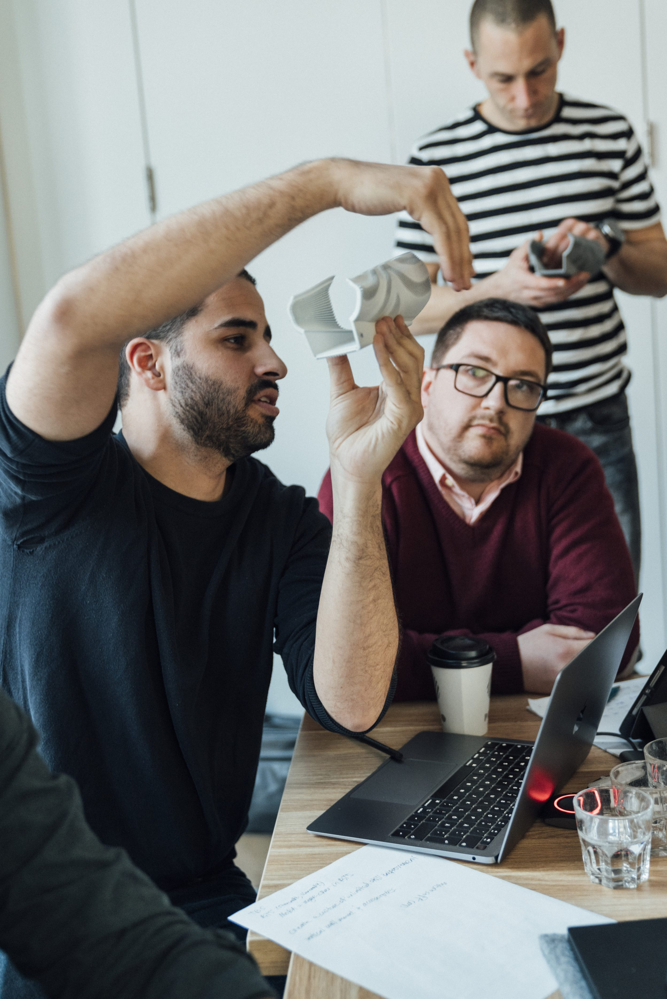

About Me
My career path has encompassed a variety of fields, including material science, architecture and industrial design.
I've done scientific research on low temperature aluminum superconductors under Professor Nina Markovic,
architectural design at PRESENT Architecture and product design with additive manufacturing at Studio Bitonti.
In that time, I've helped bring innovative products to market including 3D printed shoes for Feetz and new scoliosis braces for UNYQ.
I've also done multiple innovation based projects involving wearable technology, the manufacturing of conductive polymer compounds,
new mass customized product lines for gamers and a scoliosis brace that was acquired by The Cooper Hewitt Design Museum.
My sincere belief is that a design is only as good as the research behind it and the best research comes from the study of multiple intersecting fields.
To reach me directly, please email me at wildfeuer.peter@gmail.com
